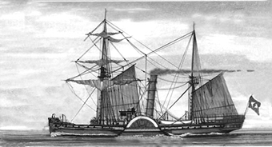
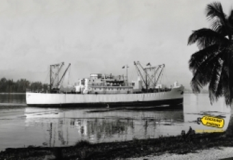
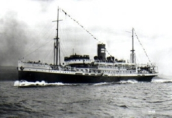
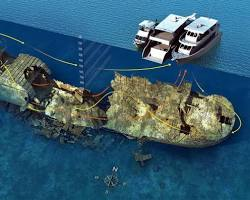
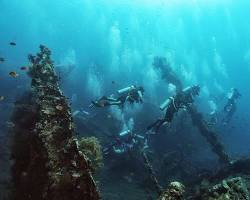
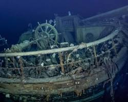

Naufrágios Históricos: Conheça suas Histórias
Home
Site de pesquisa Brasil:
Naufrágios do Brasil
Naufrágio do Vapor Bahia
Ponta de Pedras, PE

Clique aqui
para visitar o site.
Naufrágio do Pinguino
Costa Verde, RJ

Clique aqui
para visitar o site.
Naufrágio do Príncipe das Astúrias
Ilha Bela, SP

Clique aqui
para visitar o site.
Naufrágio do SS Thistlegorm
Mar Vermelho, Egito

Clique aqui
para visitar o site.
Naufrágio do USS Liberty
Tulamben, Bali

Clique aqui
para visitar o site.
Naufrágio do Endurance
Mar de Weddell, Antártida

Clique aqui
para visitar o site.